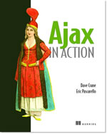

|  |
Ajax in Action Dave Crane and Eric Pascarello November 2005, 400 pages ISBN: 1932394613 Softbound print book: $44.95 |
DESCRIPTION
How to create the next generation of cutting-edge web interfaces.
Ajax exploded on the scene in the Spring of 2005 when a web site defined the term and Google released Google Maps and GMail, powerful examples of what Ajax can do. Ajax uses familiar web technologies - DHTML, CSS, DOM, and JavaScript - in radically different ways resulting in a much richer user experience. The key to success lies in knowing how to orchestrate them as a coherent whole, splitting off parts of what is normally done by the server and putting it into the browser for instantaneous response to user input. Ajax allows a new breed of web applications with the rich expressiveness of desktop applications.
This book helps developers realize that promise - it explains the big picture and how to unlearn many old coding habits. It explains the design patterns and best practices to create a live interface for the user, not get in his way. It also discusses important Ajax issues: how to make good use of network bandwidth, and how to identify, and avoid, common Ajax pitfalls. The book is aimed at all web developers with prior experience in web technologies, independent of the server technologies used. Examples of server code in the book are in Java and .NET.
The authors are Ajax developers with considerable depth of experience. They are bloggers and JavaRanch moderators.
ABOUT THE AUTHOR...
Dave Crane holds degrees in Chemistry, Parallel Computing, and Ecological Economics from Edinburgh University in Scotland. He has worked with Internet technologies for the last ten years, primarily with Java technologies such as J2EE, Jini and Jython. He has pushed the boundaries of DHTML, and latterly Ajax, since 1997, in web site design, on early Digital TV set-top boxes and in home automation systems. Most recently, he has been senior developer for Smartstream Tchnologies Ltd., developing highly-interactive Ajax-based application frameworks that are currently in use in many tier-1 banks and financial institutions worldwide. Dave lives in Gloucestershire, UK.
Eric Pascarello graduated from Penn State University in 2002 with a B.S. in Mechanical Engineering. Since then Eric has been employed as a Senior Developer working with enterprise level applications in ASP.NET. Eric has also written "JavaScript: Your visual blueprint for dynamic Web pages (2nd ed)". Eric volunteers his free time as a moderator of the HTML and JavaScript forum at www.JavaRanch.com, a friendly online community dedicated to helping people learn Java and other web technologies. He lives in Laurel, MD.
Table of Contents
- 1.1.1 Comparing the user experiences
- 1.1.2 Network latency
- 1.1.3 Asynchronous interactions
- 1.1.4 Sovereign and transient usage patterns
- 1.1.5 Unlearning the Web
- 1.2.1 The browser hosts an application, not content
- 1.2.2 The server delivers data, not content
- 1.2.3 User interaction with the application can be fluid and continuous
- 1.2.4 This is real coding and requires discipline
- 1.3.1 Surveying the field
- 1.3.2 Google Maps
- 1.4.1 Macromedia Flash-based solutions
- 1.4.2 Java Web Start and related technologies
- 2.3.1 CSS selectors
- 2.3.2 CSS style properties
- 2.3.3 A simple CSS example
- 2.3.4 Using CSS for layout
- 2.3.5 Using CSS for styling
- 2.4.1 Working with the DOM using JavaScript
- 2.4.2 Finding a DOM node
- 2.4.3 Creating a DOM node
- 2.4.4 Adding styles to your document
- 2.4.5 A shortcut: Using the innerHTML property
- 2.5.1 IFrames
- 2.5.2 XmlDocument and XMLHttpRequest objects
- 2.5.3 Sending a request to the server
- 2.5.4 Using callback functions to monitor the request
- 2.5.5 The full lifecycle
- 3.1.1 Patterns: Creating a common vocabulary
- 3.1.2 Refactoring and Ajax
- 3.1.3 Keeping a sense of proportion
- 3.1.4 Refactoring in action
- 3.2.1 Cross-browser inconsistencies: Façade and Adapter patterns
- 3.2.2 Managing event handlers: Observer pattern
- 3.2.3 Reusing user action handlers: Command pattern
- 3.2.4 Keeping only one reference to a resource: Singleton pattern
- 3.4.1 The Ajax web server tier without patterns
- 3.4.2 Refactoring the domain model
- 3.4.3 Separating content from presentation
- 3.5.1 Cross-browser libraries
- 3.5.2 Widgets and widget suites
- 3.5.3 Application frameworks
- 4.1.1 Repeating the pattern at different scales
- 4.1.2 Applying MVC in the browser
- 4.2.1 Keeping the logic out of the View
- 4.2.2 Keeping the View out of the logic
- 4.3.1 Classic JavaScript event handlers
- 4.3.2 The W3C event model
- 4.3.3 Implementing a flexible event model in JavaScript
- 4.4.1 Using JavaScript to model the business domain
- 4.4.2 Interacting with the server
- 4.5.1 Reflecting on a JavaScript object
- 4.5.2 Dealing with arrays and objects
- 4.5.3 Adding a Controller
- 5.2.1 Popular implementation languages
- 5.2.2 N-tier architectures
- 5.2.3 Maintaining client-side and server-side domain models
- 5.3.1 Naïve web server coding without a framework
- 5.3.2 Working with Model2 workflow frameworks
- 5.3.3 Working with component-based frameworks
- 5.3.4 Working with service-oriented architectures
- 5.4.1 Client-only interactions
- 5.4.2 Introducing the planet browser example
- 5.4.3 Thinking like a web page: Content-centric interactions
- 5.4.4 Thinking like a plug-in: Script-centric interactions
- 5.4.5 Thinking like an application: Data-centric interactions
- 5.5.1 Using HTML forms
- 5.5.2 Using the XmlHttpRequest object
- 5.5.3 Managing user updates effectively
- 6.1.1 Responsiveness
- 6.1.2 Robustness
- 6.1.3 Consistency
- 6.1.4 Simplicity
- 6.1.5 Making it work
- 6.2.1 Handling responses to our own requests
- 6.2.2 Handling updates from other users
- 6.3.1 Modeling notifications
- 6.3.2 Defining user interface requirements
- 6.4.1 Rendering status bar icons
- 6.4.2 Rendering detailed notifications
- 6.4.3 Putting the pieces together
- 6.6.1 Defining a simple highlighting style
- 6.2.2 Highlighting with the Scriptaculous Effects library
- 7.1.1 Introducing the 'server of origin' policy
- 7.1.2 Considerations for Ajax
- 7.1.3 Problems with subdomains
- 7.1.4 Cross-browser security
- 7.2.1 Proxying remote services
- 7.2.2 Working with web services
- 7.3.1 The man in the middle
- 7.3.2 Using secure HTTP
- 7.3.3 Encrypting data over plain HTTP using JavaScript
- 7.4.1 Designing a secure web tier
- 7.4.2 Restricting access to web data
- 8.2.1 Timing your application the hard way
- 8.2.2 Using the Venkman profiler
- 8.2.3 Optimizing execution speed for Ajax
- 8.3.1 Avoiding memory leaks
- 8.3.2 Special considerations for Ajax
- 8.4.1 Measuring memory footprint
- 8.4.2 A simple example
- 8.4.3 Results: How to reduce memory footprint 150-fold
- A.1.1 Acquiring tools that fit
- A.1.2 Building your own tools
- A.1.3 Maintaining your toolkit
- A.2.1 What to look for in a code editor
- A.2.2 Current offerings
- A.3.1 Why use a debugger
- A.3.2 JavaScript debuggers
- A.3.3 HTTP debuggers
- A.3.4 Building your own cross-browser output console
- A.4.1 Using the Mozilla DOM Inspector
- A.4.2 DOM inspectors for Internet Explorer
- B.2.1 Building ad hoc objects
- B.2.2 Constructor functions, classes, and prototypes
- B.2.3 Extending built-in classes
- B.2.4 Inheritance of prototypes
- B.2.5 Reflecting on JavaScript objects
- B.2.6 Interfaces and duck typing
- B.3.1 Functions as first-class citizens
- B.3.2 Attaching functions to objects
- B.3.3 Borrowing functions from other objects
- B.3.4 Ajax event handling and function contexts
- B.3.5 Closures in JavaScript